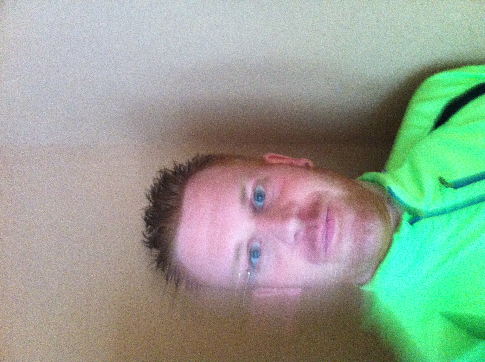

Naam : Youri Peters
Woonplaats : Volendam
Geboorte datum : 04-04-1980
Werk : Technisch tekenaar / werkvoorbereider (Autocad )
Algemeen :
Youri is een redelijk sportief persoon die regelmatig :
- Aan harlopen doet
- Op de mountainbike door de bossen gaat
- Op een racefiets de fietspaden onveilig maakt
- In de sportschool zijn tijd besteed
Maar naast dat sporten ook nog gewoon tijd over heeft voor andere zaken zoals :
- Een biertje drinken op de dijk
- Het volgen van salsa lessen
- House feestje/festivals
Ook is hij vaak in de weekends bezig om van een feestje een feest te maken met zijn licht & geluid verhuur.